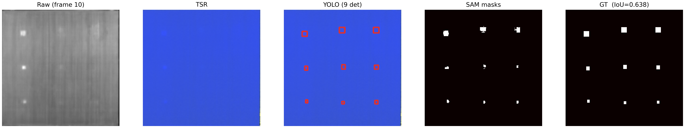
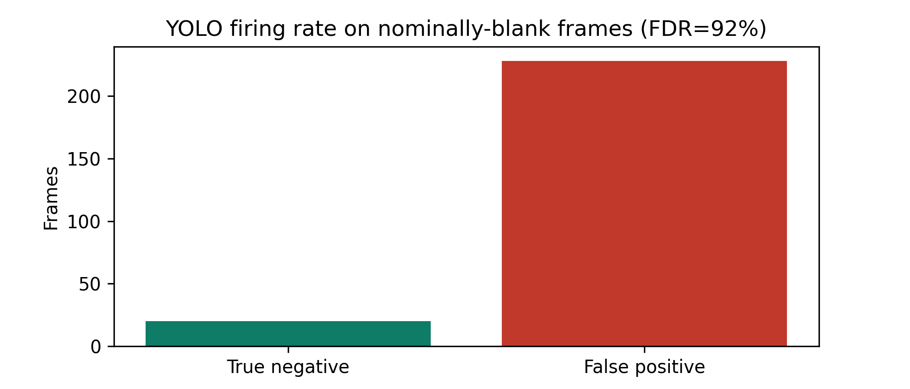

A YOLOv11-guided, Segment-Anything-based pipeline for automatic defect segmentation in CFRP pulsed thermography. This page reports what a full, verified re-run of the pipeline shows — including the parts that revise how the method should be presented.
In short: detection is essentially solved on this dataset; SAM segmentation is honest but not exceptional, and a plain U-Net beats every SAM configuration on raw accuracy; the pipeline transfers to a second, unrelated domain; and a real reliability problem (false positives on blank frames) remains open.
YOLOv11 was trained separately on three thermal-image representations — the raw thermogram, a thermographic signal reconstruction (TSR), and TSR plus its first and second derivatives — with identical labels across all three, so any difference reflects the input signal, not the labels.
| Input | Precision | Recall | F1 |
|---|---|---|---|
| Raw thermogram | 0.999 | 0.997 | 0.998 |
| TSR only | 0.996 | 1.000 | 0.998 |
| TSR + derivatives | 0.995 | 1.000 | 0.998 |
All three are near-perfect. The derivative channels close a small recall gap on the smallest defects, but detection itself isn't where this method lives or dies — segmentation is.
SAM was adapted four different ways, to separate what each piece contributes: unmodified (zero-shot), only its encoder-side LoRA adapters trained (LoRA-only), the adapters trained together with the mask decoder (LoRA), and the decoder alone trained with the encoder untouched (decoder-only).
Oracle-prompted IoU, diagnostic set covering all defect sizes and depths.
Decoder-only training wins outright — and adding LoRA adapters on top of it makes things worse (0.753 vs. 0.881), not better. It's also the cheapest: LoRA's memory cost turns out to come entirely from backpropagating through the frozen encoder to reach its adapters, not from training the decoder, so decoder-only uses a third of the memory of either LoRA variant while training faster and scoring higher.
| Trainable params | Peak memory | Train time | |
|---|---|---|---|
| Decoder-only | 4.06M | 2.8 GB | 45.9 min |
| LoRA | 4.21M | 8.3 GB | 37.6 min |
| LoRA-only | 0.15M | 8.2 GB | 63.1 min |
Prompted automatically by YOLO's own detections rather than ground truth, decoder-only SAM's IoU drops from 0.881 to 0.682 on the same diagnostic set — the real, size-balanced cost of imperfect localization. (An earlier, narrower reading of the test set had this at a misleadingly perfect 1.000; that number only held for one easy defect category and has been retired.)

Six conventional segmentation models were trained on the same split and evaluated with the same protocol, to check whether the extra SAM stage is earning its keep.
Same split, same evaluation protocol, all seven models. Italic = SAM.
U-Net beats every SAM configuration here — training about 5× faster and running about 20× faster at inference. On raw accuracy, the case for the extra detector-and-SAM stage doesn't hold up against a well-tuned classical baseline on this dataset. Its argument has to rest on something other than accuracy.
The CFRP dataset is one instrumented specimen with defects at fixed positions. To see whether the pipeline generalizes at all, it was retrained and evaluated on KolektorSDD — an unrelated, real industrial surface-defect dataset, held out at the level of whole physical items rather than frames.
It transfers, and it degrades exactly where it should: the weaker automatic score traces directly to the detector's weaker performance on this harder domain, not to a separate failure in the segmentation stage.
On 248 frames where the thermal defect signal has fully decayed and nothing should be detected, the detector fired on 91.9% of them anyway — concentrated at a handful of the same spatial positions where real defects sit elsewhere in the sequence, rather than spread as random noise.

This is reported as unresolved, not mitigated. A similar, milder pattern showed up in several of the six baseline models too, which suggests it may be partly a property of that stretch of the sequence rather than something specific to YOLO.
Detection is close to solved here. SAM segmentation is real but not the strongest option available — decoder-only fine-tuning is the right configuration to present, not LoRA, and a plain U-Net still beats it. The pipeline does generalize to a second domain, and that transfer is honestly characterized rather than assumed. The open problem is the blank-frame false-positive rate, which nothing in this cycle has fixed.